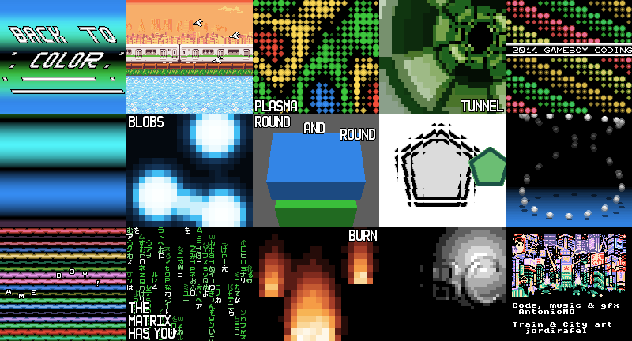

Hello again!
This time I'm here to show you my first GBC demo! Made specially for the 2014 GBDev Game Boy Coding Compo. In fact, I started it like four years ago, but stopped after doing 3 scenes (the first effect, the text scroller at the end of the first song and the colorful horizontal bars before the matrix effect). I've coded the rest in just a few weeks, in fact I started doing new effects a few days before the GBDev compo announcement. I've coded it and made the music, the only thing I haven't done is the train screen graphics and the credits graphics (by jordirafel). I'm not a very good musician, so... Oh, and it shows a little credits screen in non-color GBs! Some screenshots here:
And here it is, the download link:
If you want to test it in an emulator (like BGB, Gambatte or VBA-M), most of them have a "Frame Blending" option, enable it if possible. It works in real hardware, of course! Tested in DMG, MGB, GBC, GBA and GBA SP. If you want to skip some parts, hold up/right/down/left when the demo is loading if you want to skip 1/2/3/4 songs. Non-color GB only show the reduced credits screen!
I have also recorded a video with VBA-M in case you are too lazy to download an emulator! :P The shadows in the bouncing balls effect are incorrect, they should be the same color, but the rest is correct. In a real GBC or an emulator it looks fine.
https://www.youtube.com/watch?v=eSEsd1OGA74
The demo has been coded using my fork of RGBDS (with a few bugfixes), a GBT Player version modified to use only the first ROM bank, OpenMPT to make the music, GBTK and GBMB. To test it I've used BGB, Gambatte, VBA-M, my GiiBiiAdvance... and real hardware.
I hope you like it! :)
...
Oh...
One last thing...
Yeah, that's everything. :P
Update
As of 2018-01-31, this demo should be able to compile with the upstream RGBDS, that is located here: https://github.com/rednex/rgbds